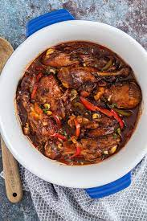

]
Brown Stew Chicken
Curried Chicken

What is Brown Stew Chicken?
Brown stew chicken or stew chicken is a delicious chicken dish made with browning, pepper and various other spices. It can be eaten as a main dish with your choice of sides such as white rice, boiled dumplings, yam and other staples or rice and peas etc. This dish is a staple in many households in my country and a favorite of mine!
Ingredients
Approximate cook time is 45 mins.
- 2 lbs Chicken (Use Whatever Part of the Chicken Liked Most By You.)
- 1 bottle of Grace Browning seasoning
- Scotch Bonnet Pepper or Pepper of Your Choice
- Salt
- Onion
- Green Onion/Escallion
- Pimento
- Garlic
- Chicken Seasoning
- 2 teaspoons olive oil
Steps
- Cut chicken into bite-sized pieces
- Clean and rinse with plain water then in vinegar or lime juice then rinse with plain water.
- Add chopped onions, escallion/green onion, pimento, a few drops of Browning enough to coat all the pieces and other seasonings to the chicken. Make sure it is evenly coated
- Add 2 teaspoons of olive to heated pot.
- Place the chicken into the pot and cover the pot.
- Check the chicken every 6-10 mins to ensure the gravy hasn't been cooked too low and add water as needed.
- Add scotch bonnet to taste.
- Leave to cook on medium heat, checking every 6-10 mins.
- Chicken should be tender and coated in a rich brown color.
- Once the chicken is cooked to tenderness and there is sufficient liquid/gravy in the pot, turn off stove.
- Serve hot with a side of your choice and enjoy!